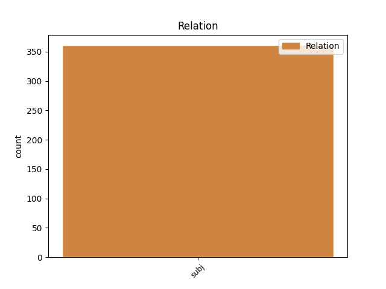
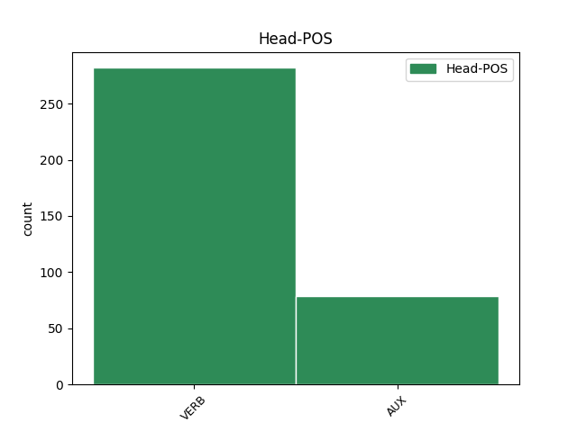
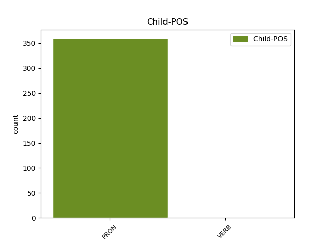

Distribution of features within this leaf



Agreement Rules sorted by frequency.
- When the dependent token is the subject(subj) of the head token, and the head token is VERB
1 Αυτό αυτός PRON PRON Case=Nom|Gender=Neut|Number=Sing|Person=3|PronType=Dem 2 subj _ _
2 μπορεί μπορώ VERB VERB Aspect=Imp|Mood=Ind|Number=Sing|Person=3|Tense=Pres|VerbForm=Fin|Voice=Act 0 _ _ _
3 να _ _ _ _ 0 _ _ _
4 μην _ _ _ _ 0 _ _ _
5 οδηγήσει _ _ _ _ 0 _ _ _
6 σ _ _ _ _ 0 _ _ _
7 τη _ _ _ _ 0 _ _ _
8 λήξη _ _ _ _ 0 _ _ _
9 του _ _ _ _ 0 _ _ _
10 εν _ _ _ _ 0 _ _ _
11 λόγω _ _ _ _ 0 _ _ _
12 ζητήματος _ _ _ _ 0 _ _ _
13 αλλά _ _ _ _ 0 _ _ _
14 , _ _ _ _ 0 _ _ _
15 σ _ _ _ _ 0 _ _ _
16 τη _ _ _ _ 0 _ _ _
17 μορφή _ _ _ _ 0 _ _ _
18 υπό _ _ _ _ 0 _ _ _
19 την _ _ _ _ 0 _ _ _
20 οποία _ _ _ _ 0 _ _ _
21 την _ _ _ _ 0 _ _ _
22 λάβαμε _ _ _ _ 0 _ _ _
23 , _ _ _ _ 0 _ _ _
24 αυτή _ _ _ _ 0 _ _ _
25 η _ _ _ _ 0 _ _ _
26 αίτηση _ _ _ _ 0 _ _ _
27 άρσης _ _ _ _ 0 _ _ _
28 της _ _ _ _ 0 _ _ _
29 ασυλίας _ _ _ _ 0 _ _ _
30 ήταν _ _ _ _ 0 _ _ _
31 , _ _ _ _ 0 _ _ _
32 κατά _ _ _ _ 0 _ _ _
33 την _ _ _ _ 0 _ _ _
34 άποψη _ _ _ _ 0 _ _ _
35 της _ _ _ _ 0 _ _ _
36 Επιτροπής _ _ _ _ 0 _ _ _
37 Νομικών _ _ _ _ 0 _ _ _
38 Θεμάτων _ _ _ _ 0 _ _ _
39 , _ _ _ _ 0 _ _ _
40 απαράδεκτη _ _ _ _ 0 _ _ _
41 , _ _ _ _ 0 _ _ _
42 άποψη _ _ _ _ 0 _ _ _
43 την _ _ _ _ 0 _ _ _
44 οποία _ _ _ _ 0 _ _ _
45 συνιστώ _ _ _ _ 0 _ _ _
46 σ _ _ _ _ 0 _ _ _
47 το _ _ _ _ 0 _ _ _
48 Σώμα _ _ _ _ 0 _ _ _
49 να _ _ _ _ 0 _ _ _
50 υιοθετήσει _ _ _ _ 0 _ _ _
51 . _ _ _ _ 0 _ _ _
1 Θα _ _ _ _ 0 _ _ _
2 ήθελα _ _ _ _ 0 _ _ _
3 να _ _ _ _ 0 _ _ _
4 επιστήσω _ _ _ _ 0 _ _ _
5 την _ _ _ _ 0 _ _ _
6 προσοχή _ _ _ _ 0 _ _ _
7 όλων _ _ _ _ 0 _ _ _
8 των _ _ _ _ 0 _ _ _
9 συναδέλφων _ _ _ _ 0 _ _ _
10 σ _ _ _ _ 0 _ _ _
11 το _ _ _ _ 0 _ _ _
12 γεγονός _ _ _ _ 0 _ _ _
13 ότι _ _ _ _ 0 _ _ _
14 , _ _ _ _ 0 _ _ _
15 εάν _ _ _ _ 0 _ _ _
16 υπάρχουν _ _ _ _ 0 _ _ _
17 κάποιες _ _ _ _ 0 _ _ _
18 ελευθερίες _ _ _ _ 0 _ _ _
19 οι _ _ _ _ 0 _ _ _
20 οποίες οποίος PRON PRON Case=Nom|Gender=Fem|Number=Plur|Person=3|PronType=Rel 21 subj _ _
21 είναι είμαι AUX AUX Aspect=Imp|Mood=Ind|Number=Plur|Person=3|Tense=Pres|VerbForm=Fin|Voice=Pass 0 _ _ _
22 ζωτικής _ _ _ _ 0 _ _ _
23 σημασίας _ _ _ _ 0 _ _ _
24 για _ _ _ _ 0 _ _ _
25 την _ _ _ _ 0 _ _ _
26 άσκηση _ _ _ _ 0 _ _ _
27 του _ _ _ _ 0 _ _ _
28 λειτουργήματος _ _ _ _ 0 _ _ _
29 της _ _ _ _ 0 _ _ _
30 δημόσιας _ _ _ _ 0 _ _ _
31 εκπροσώπησης _ _ _ _ 0 _ _ _
32 , _ _ _ _ 0 _ _ _
33 ιδίως _ _ _ _ 0 _ _ _
34 για _ _ _ _ 0 _ _ _
35 ένα _ _ _ _ 0 _ _ _
36 Κοινοβούλιο _ _ _ _ 0 _ _ _
37 σαν _ _ _ _ 0 _ _ _
38 το _ _ _ _ 0 _ _ _
39 δικό _ _ _ _ 0 _ _ _
40 μας _ _ _ _ 0 _ _ _
41 , _ _ _ _ 0 _ _ _
42 η _ _ _ _ 0 _ _ _
43 ελευθερία _ _ _ _ 0 _ _ _
44 της _ _ _ _ 0 _ _ _
45 επικοινωνίας _ _ _ _ 0 _ _ _
46 με _ _ _ _ 0 _ _ _
47 άλλους _ _ _ _ 0 _ _ _
48 πολίτες _ _ _ _ 0 _ _ _
49 και _ _ _ _ 0 _ _ _
50 με _ _ _ _ 0 _ _ _
51 τους _ _ _ _ 0 _ _ _
52 πολίτες _ _ _ _ 0 _ _ _
53 τρίτων _ _ _ _ 0 _ _ _
54 χωρών _ _ _ _ 0 _ _ _
55 , _ _ _ _ 0 _ _ _
56 καθώς _ _ _ _ 0 _ _ _
57 και _ _ _ _ 0 _ _ _
58 η _ _ _ _ 0 _ _ _
59 ελευθερία _ _ _ _ 0 _ _ _
60 μετακίνησης _ _ _ _ 0 _ _ _
61 , _ _ _ _ 0 _ _ _
62 είναι _ _ _ _ 0 _ _ _
63 κρίσιμες _ _ _ _ 0 _ _ _
64 για _ _ _ _ 0 _ _ _
65 τη _ _ _ _ 0 _ _ _
66 διεκπεραίωση _ _ _ _ 0 _ _ _
67 του _ _ _ _ 0 _ _ _
68 έργου _ _ _ _ 0 _ _ _
69 μας _ _ _ _ 0 _ _ _
70 . _ _ _ _ 0 _ _ _
Disagree Examples:
1 Τα _ _ _ _ 0 _ _ _
2 ανεξάρτητα _ _ _ _ 0 _ _ _
3 μέλη _ _ _ _ 0 _ _ _
4 πρέπει _ _ _ _ 0 _ _ _
5 να _ _ _ _ 0 _ _ _
6 αποκτήσουν _ _ _ _ 0 _ _ _
7 δικές _ _ _ _ 0 _ _ _
8 τους _ _ _ _ 0 _ _ _
9 σχετικές _ _ _ _ 0 _ _ _
10 δυνατότητες _ _ _ _ 0 _ _ _
11 και _ _ _ _ 0 _ _ _
12 πρέπει πρέπει AUX AUX Aspect=Imp|Mood=Ind|Number=Sing|Person=3|Tense=Pres|VerbForm=Fin|Voice=Act 0 _ _ _
13 εμείς εγώ PRON PRON Case=Nom|Gender=Masc|Number=Plur|Person=1|PronType=Prs 12 subj _ _
14 οι _ _ _ _ 0 _ _ _
15 ίδιοι _ _ _ _ 0 _ _ _
16 να _ _ _ _ 0 _ _ _
17 καταργήσουμε _ _ _ _ 0 _ _ _
18 κάθε _ _ _ _ 0 _ _ _
19 μορφής _ _ _ _ 0 _ _ _
20 διακρίσεις _ _ _ _ 0 _ _ _
21 αντί _ _ _ _ 0 _ _ _
22 να _ _ _ _ 0 _ _ _
23 διακινδυνεύουμε _ _ _ _ 0 _ _ _
24 να _ _ _ _ 0 _ _ _
25 προκύψει _ _ _ _ 0 _ _ _
26 νέα _ _ _ _ 0 _ _ _
27 δίκη _ _ _ _ 0 _ _ _
28 . _ _ _ _ 0 _ _ _
1 Όμως _ _ _ _ 0 _ _ _
2 , _ _ _ _ 0 _ _ _
3 λέμε _ _ _ _ 0 _ _ _
4 επίσης _ _ _ _ 0 _ _ _
5 ότι _ _ _ _ 0 _ _ _
6 πρέπει _ _ _ _ 0 _ _ _
7 να _ _ _ _ 0 _ _ _
8 διασφαλίζεται _ _ _ _ 0 _ _ _
9 η _ _ _ _ 0 _ _ _
10 ανεξαρτησία _ _ _ _ 0 _ _ _
11 των _ _ _ _ 0 _ _ _
12 βουλευτών _ _ _ _ 0 _ _ _
13 και _ _ _ _ 0 _ _ _
14 η _ _ _ _ 0 _ _ _
15 αξιοπρέπειά _ _ _ _ 0 _ _ _
16 τους _ _ _ _ 0 _ _ _
17 και _ _ _ _ 0 _ _ _
18 από _ _ _ _ 0 _ _ _
19 νομική _ _ _ _ 0 _ _ _
20 άποψη _ _ _ _ 0 _ _ _
21 εμείς εγώ PRON PRON Case=Nom|Gender=Masc|Number=Plur|Person=1|PronType=Prs 22 subj _ _
22 πρέπει πρέπει AUX AUX Aspect=Imp|Mood=Ind|Number=Sing|Person=3|Tense=Pres|VerbForm=Fin|Voice=Act 0 _ _ _
23 να _ _ _ _ 0 _ _ _
24 συντάξουμε _ _ _ _ 0 _ _ _
25 το _ _ _ _ 0 _ _ _
26 συγκεκριμένο _ _ _ _ 0 _ _ _
27 καταστατικό _ _ _ _ 0 _ _ _
28 κι _ _ _ _ 0 _ _ _
29 όχι _ _ _ _ 0 _ _ _
30 το _ _ _ _ 0 _ _ _
31 Συμβούλιο _ _ _ _ 0 _ _ _
32 ! _ _ _ _ 0 _ _ _
1 Σε _ _ _ _ 0 _ _ _
2 τελευταία _ _ _ _ 0 _ _ _
3 ανάλυση _ _ _ _ 0 _ _ _
4 λοιπόν _ _ _ _ 0 _ _ _
5 το _ _ _ _ 0 _ _ _
6 ζητούμενο _ _ _ _ 0 _ _ _
7 δεν _ _ _ _ 0 _ _ _
8 είναι _ _ _ _ 0 _ _ _
9 να _ _ _ _ 0 _ _ _
10 πούμε _ _ _ _ 0 _ _ _
11 " _ _ _ _ 0 _ _ _
12 ναι _ _ _ _ 0 _ _ _
13 " _ _ _ _ 0 _ _ _
14 σε _ _ _ _ 0 _ _ _
15 κάτι _ _ _ _ 0 _ _ _
16 που _ _ _ _ 0 _ _ _
17 προτείνει _ _ _ _ 0 _ _ _
18 το _ _ _ _ 0 _ _ _
19 Συμβούλιο _ _ _ _ 0 _ _ _
20 , _ _ _ _ 0 _ _ _
21 αντίθετα _ _ _ _ 0 _ _ _
22 , _ _ _ _ 0 _ _ _
23 εμείς _ _ _ _ 0 _ _ _
24 είμαστε _ _ _ _ 0 _ _ _
25 που που PRON PRON Case=Nom|Gender=Masc|Number=Plur|Person=3|PronType=Rel 26 subj _ _
26 υποβάλλουμε υποβάλλω VERB VERB Aspect=Imp|Mood=Ind|Number=Plur|Person=1|Tense=Pres|VerbForm=Fin|Voice=Act 0 _ _ _
27 τις _ _ _ _ 0 _ _ _
28 προτάσεις _ _ _ _ 0 _ _ _
29 και _ _ _ _ 0 _ _ _
30 μετά _ _ _ _ 0 _ _ _
31 από _ _ _ _ 0 _ _ _
32 αυτό _ _ _ _ 0 _ _ _
33 πρέπει _ _ _ _ 0 _ _ _
34 να _ _ _ _ 0 _ _ _
35 καταλήξουμε _ _ _ _ 0 _ _ _
36 σε _ _ _ _ 0 _ _ _
37 κάτι _ _ _ _ 0 _ _ _
38 από _ _ _ _ 0 _ _ _
39 κοινού _ _ _ _ 0 _ _ _
40 με _ _ _ _ 0 _ _ _
41 το _ _ _ _ 0 _ _ _
42 Συμβούλιο _ _ _ _ 0 _ _ _
43 . _ _ _ _ 0 _ _ _